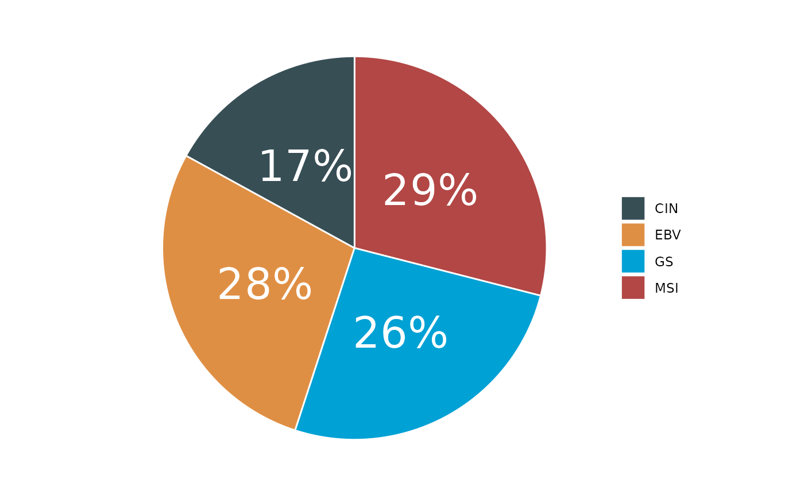

Generates a pie chart or donut chart from input data.
Usage
pie_chart(
input,
var,
var2 = NULL,
type = 2,
show_freq = FALSE,
color = NULL,
palette = "jama",
title = NULL,
text_size = 10,
title_size = 20,
add_sum = FALSE
)Arguments
- input
Input dataframe.
- var
Variable for the chart.
- var2
Secondary variable for donut chart (type = 3).
- type
Chart type: 1 (pie), 2 (donut), 3 (PieDonut via webr).
- show_freq
Logical to show frequencies. Default is FALSE.
- color
Optional color palette.
- palette
Color palette name. Default is "jama".
- title
Plot title. Default is NULL.
- text_size
Text size. Default is 10.
- title_size
Title size. Default is 20.
- add_sum
Logical to add sum to labels. Default is FALSE.
Examples
sig_stad <- load_data("sig_stad")
#> ℹ Loading cached data: "sig_stad"
pie_chart(input = sig_stad, var = "Subtype", palette = "jama")
#> ℹ Available categories: box, continue2, continue, random, heatmap, heatmap3, tidyheatmap
#> ℹ Box palettes: nrc, jama, aaas, jco, paired1, paired2, paired3, paired4, accent, set2
 pie_chart(input = sig_stad, var = "Subtype", type = 2)
#> ℹ Available categories: box, continue2, continue, random, heatmap, heatmap3, tidyheatmap
#> ℹ Box palettes: nrc, jama, aaas, jco, paired1, paired2, paired3, paired4, accent, set2
pie_chart(input = sig_stad, var = "Subtype", type = 2)
#> ℹ Available categories: box, continue2, continue, random, heatmap, heatmap3, tidyheatmap
#> ℹ Box palettes: nrc, jama, aaas, jco, paired1, paired2, paired3, paired4, accent, set2
